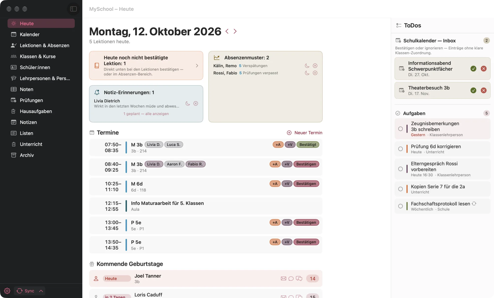

So geht’s
Von der Einrichtung bis zum Schuljahreswechsel: die häufigsten Handgriffe in MySchool, Schritt für Schritt. Suchst du etwas Bestimmtes, spring einfach über das Inhaltsverzeichnis hin.
Erste Schritte
Installieren
- Das DMG öffnen und MySchool in den Ordner Programme ziehen.
- MySchool aus dem Ordner Programme starten. Die App ist von Apple notarisiert, macOS fragt nur beim ersten Start einmal nach.
MySchool braucht macOS 26.4 oder neuer.
Einrichtung
Beim ersten Start führt dich ein Assistent in sieben Schritten durch alles Nötige. Jeden Schritt kannst du überspringen und später nachholen.
- Anzeige: Farbpalette, hell oder dunkel, Schriftgrösse.
- Intranet: Benutzername und Passwort des Intranets eingeben, dann Anmelden & prüfen. Danach holt MySchool Klassen, Schüler:innen, Stundenplan und Schulkalender. Ohne Anmeldung bleibt die App weitgehend leer.
- Berechtigungen: Zugriff auf Kalender und Erinnerungen erlauben, damit die eigenen Termine und Aufgaben in MySchool erscheinen.
- Kalender: wählen, welche Kalender und Erinnerungslisten MySchool zeigt und wohin neue Termine und Aufgaben gehen.
- Mitteilungen: Mitteilungen aktivieren und das Empfohlene Set übernehmen (Geburtstage, Prüfungen, gestrichene Lektionen, Sitzungen).
- iCloud: nur nötig, wenn du MySchool auf mehreren eigenen Geräten brauchst. Standard ist aus, die Nutzung an der Schule ist noch in Abklärung.
- Fertig. Der erste Abgleich mit dem Intranet läuft im Hintergrund und dauert ein, zwei Minuten (Zeit für einen Kaffee).
Später ändern: Die Einrichtung kannst du jederzeit unter Einstellungen › Allgemein › Einrichtung erneut öffnen wiederholen. Die Zugangsdaten liegen im Schlüsselbund von macOS.
Bedienung
Links steht die Seitenleiste mit den Bereichen, rechts der Inhalt. Viele Bereiche haben oben Reiter, etwa der Kalender mit Woche, Liste, Zimmer und Geräte. Bereiche, die du nicht brauchst, blendest du unter Einstellungen › Allgemein › Bereiche aus.
| Kürzel | Was es tut |
|---|---|
| ⌘ 1 … ⌘ 0 | Bereich wechseln: Heute, Kalender, Lektionen & Absenzen, Klassen, Schüler:innen, Lehrpersonen, Noten, Prüfungen, Hausaufgaben, Notizen |
| ⇧ ⌘ U / L / A | Unterricht, Listen, Archiv |
| ⌘ K | Befehlspalette: zu jeder Person, Klasse oder Lektion springen und Kurzbefehle eintippen |
| ⇧ ⌘ K | Schnellerfassung von überall auf dem Mac, auch bei geschlossener App |
| ⇧ ⌘ F | Suche über alles |
| ⇧ ⌘ N | Schnellnotiz |
| ⌃ Tab · ⌥ ⌘ 1 … 5 | Nächster Reiter · Reiter direkt wählen |
| ⌘ ← → · ⌘ T | Im Kalender und im Prüfungsplan vor- und zurückblättern · zurück zu heute |
| ⌥ ⌘ P | Präsentationsmodus ein und aus |
Alle Kürzel kannst du unter Einstellungen › Kurzbefehle ändern.
Heute
Der Startbereich zeigt, was heute ansteht: die Lektionen mit Absenzen, Prüfungen, fällige Notiz-Erinnerungen, Geburtstage und Rückläufe, die noch fehlen. Rechts unter ToDos stehen neue Einträge im Schulkalender und deine offenen Aufgaben.

Lektion bestätigen
- Neben der Lektion auf Bestätigen klicken.
- Beim allerersten Mal fragt MySchool, ob es ins Intranet schreiben darf (Erlauben & bestätigen). Danach reicht ein Klick.
Aufgaben abhaken
Ein Klick auf den Kreis hakt eine Aufgabe ab, ein Doppelklick öffnet sie zum Bearbeiten. Mit + oben im ToDos-Bereich legst du eine neue an. Die Aufgaben gleicht MySchool mit deinen Aufgabenlisten ab (iCloud, Microsoft 365 …), welche Listen erscheinen, steht unter Einstellungen › Aufgaben.
Schulkalender-Einträge übernehmen
Neue Einträge im Schulkalender, die eigene Klassen betreffen, erscheinen in Heute zum Bestätigen. Was du bestätigst, steht danach im Kalender und löst Mitteilungen aus.
Hinweise ernst nehmen: Absenzenmuster („fehlt oft am Montagmorgen“) und der Prüfungs-Check (wer vor einer heutigen Prüfung gefehlt hat) erscheinen nur, wenn es etwas zu melden gibt. Ein Klick öffnet das Profil der Person.
Kalender & Termine
Die Woche zeigt Lektionen, Schulkalender und die verknüpften Kalender (iCloud, Exchange, Google) in einem Raster. Mit den Pillen oben blendest du Quellen ein und aus.

Termin anlegen
- In der Woche an eine freie Stelle doppelklicken oder mit der Maus einen Zeitraum aufziehen.
- Titel, Ort und Zeit eintragen.
- Unter Teilnehmer:innen einladen Personen aus den Klassenlisten oder den Kontakten hinzufügen und Einladung senden. Die Einladung geht über Apple Mail.
Verschieben, ändern, löschen
- Verschieben: den Termin mit der Maus an eine andere Stelle ziehen. Eingeladene erhalten die Änderung automatisch.
- Ändern: doppelklicken.
- Löschen: anklicken und die Rückschritttaste drücken, oder Rechtsklick › Löschen. Eingeladene erhalten eine Absage.
Lektion verschieben oder tauschen: Rechtsklick auf eine Lektion › Verschieben oder abtauschen. MySchool schlägt Lektionen anderer Lehrpersonen der Klasse vor, bei denen beide Seiten frei sind, samt Mail-Entwurf.
Stundenpläne vergleichen: Mit + Weitere in der Pillenleiste (⌃ W) legst du den Stundenplan einer Klasse oder Lehrperson neben deinen.
Weitere Kalender abonnieren: Unter Einstellungen › Kalender kannst du weitere Kalender hinzufügen. Im Modus „Bestätigen“ landen neue Einträge zuerst in Heute, wie beim Schulkalender.
Termin finden
Sucht freie Zeit über den eigenen Stundenplan, die Stundenpläne von Kolleg:innen und die eigenen Kalender.

- Im Kalender oben rechts auf Termin finden klicken.
- Den Termin in einem Satz beschreiben, etwa „45 Min Anfang November, nicht am Mittwoch, eher nachmittags“. MySchool zeigt, was es erkannt hat.
- Mit Hinzufügen… die Lehrpersonen (oder eine Klasse) wählen, die dabei sein sollen. Ihr Stundenplan muss im Vorschlag frei sein.
- Einen Vorschlag wählen (der beste ist markiert, mit Begründung pro Person) und auf Übernehmen klicken. Der Termin wird angelegt und die Lehrpersonen eingeladen.
Passt keiner? Mehr Vorschläge gibt weitere. Mit Möglichst nahe am Stundenplan bevorzugt die Suche Zeiten direkt vor oder nach einer Lektion.
Zimmer & Geräte
Freies Zimmer finden und reservieren
- Im Kalender den Reiter Zimmer öffnen und den Tag wählen.
- In der Stundenleiste eine Lektion anklicken oder mehrere aufziehen. Jetzt stehen nur noch die freien Zimmer da, nach Stockwerk geordnet. Ausfallende Lektionen zählen als frei.
- Bei reservierbaren Zimmern auf Zimmer … reservieren klicken.

Beamer- oder Laptopwagen buchen
- Im Kalender den Reiter Geräte öffnen. Oben stehen die eigenen Lektionen, darunter alle buchbaren Geräte als Zeitstrahl.
- Eine eigene Lektion auf die Zeile des Geräts ziehen. Fertig.
- Eigene Buchungen sind hervorgehoben. Rechtsklick › Reservation löschen… gibt ein Gerät wieder frei.

Lektionen & Absenzen
Das Klassenbuch ohne Umweg über das Intranet. Die Liste zeigt die eigenen Lektionen, mit Hausaufgaben, Absenzen und dem Bestätigen-Knopf.

Absenzen erfassen
- Die Lektion öffnen (Doppelklick in der Liste oder im Kalender).
- Bei der Schüler:in, die fehlt, den Status wählen. Alle anderen gelten als anwesend.
- Lektion bestätigt anhaken, sobald alles stimmt.
Ein Klick auf eine Absenz zeigt den ganzen Tag der Person, über alle Fächer und mit Grund.
Hausaufgabe eintragen
In der geöffneten Lektion unter Hausaufgaben den Text eintragen, auf Wunsch mit Datei. Mehrere auf einmal geht im Bereich Hausaufgaben unter Erfassen.
Als Klassenlehrperson
Der Reiter Meine Klasse zeigt alle Absenzen des Semesters, eine Zeile pro Person. Ein Klick auf einen Tag zeigt dessen Absenzen: Alle entschuldigen oder einzeln den Status setzen. Das Suchfeld (⌘ F) findet Schüler:innen, ein Klick auf einen Typ in der Legende hebt diese Absenzen hervor.

Ohne Netz? Kein Problem. Bestätigungen, Absenzen und Hausaufgaben warten in einer Warteschlange und gehen raus, sobald die Verbindung steht. Ein kleines Symbol neben dem Eintrag zeigt dir, ob er schon angekommen ist.
Unterricht planen
Pro Kurs eine Zeile pro Lektion mit Material, Feinplan und Bemerkung. Ausfälle, Ferien und Prüfungen sind schon eingetragen. Mit ⇧ ⌘ U bist du dort.

Planen
- Oben den Kurs wählen.
- In die Zellen schreiben: Material (auch Links und Dateien), Feinplan (mit Checklisten), Bemerkung.
- Eine Zeile verschieben: mit der Maus ziehen, der Rest rückt nach. Mit ⌥ gedrückt tauschen zwei Zeilen den Platz.
- Fällt eine geplante Lektion aus, steht dort „fällt aus“. Ein Klick auf Plan nachrücken schiebt ihren Plan und alles danach um eine Lektion weiter.
Hausaufgabe und Prüfung direkt aus dem Plan
- Schreibst du in die Bemerkung eine Zeile
HA: Serie 6, Nr. 1–4, erscheint der Knopf Hausaufgabe ins Klassenbuch. Steht dort schon eine andere, fragt MySchool nach. - Rechtsklick › Als Prüfung markieren markiert die Lektion auch im Intranet. Eine Zeile
Prüfung: Vektorenhält den Stoff fest.
Themen wiederverwenden
- Mehrere Lektionen mit ⇧- oder ⌘-Klick wählen.
- Rechtsklick › Ins Thema übernehmen … und einen Namen geben, auf Wunsch mit Feinplan.
- Im Kursplan eines anderen Kurses steht rechts die Themen-Bibliothek. Das Thema auf die Lektion ziehen, ab der es beginnen soll. Ein Band am Rand zeigt danach den Fortschritt, etwa „3/8“. Bearbeiten lassen sich Themen im Reiter Themen.
Klassen & Schüler:innen
Unter Klassen & Kurse steht alles zu einer Klasse: Klassenliste mit Fotos, Ämtli, Hinweisen und Geburtstagen, dazu Stundenplan, Lehrpersonen und Kurse als Reiter.

Mail an die Klasse oder die Eltern
Über das Menü der Klasse: Mail an Schüler:innen, Mail an alle Eltern oder Mail an Lehrpersonen. MySchool öffnet einen Entwurf im Mailprogramm, verschickt wird erst dort. Ehemalige sind ausgenommen. Daneben öffnet Klassen-Kanal öffnen den Teams-Kanal.
Klassenspiegel, Export
Klassenspiegel (PDF) erstellt eine Fotoliste zum Ausdrucken, Excel/CSV-Export die Klassenliste als Tabelle.
Sitzordnung
- In der Klasse Sitzordnung öffnen.
- Pulte anordnen oder Standardanordnung nehmen.
- Verteilen wählen: Zufällig, Abwechselnd oder In Zweierblöcken. Danach einzelne Personen von Hand umsetzen.
- Mit dem Drucker-Symbol drucken oder als PDF sichern.

Zufallsgenerator: Das Glücksrad wählt jemanden aus der Klasse aus, im Gruppenmodus bildet es Gruppen. Wer schon dran war, merkt sich der Verlauf.
Profil einer Person
Ein Klick auf einen Namen öffnet das Profil: Kontakt, Eltern, Absenzen, Noten, Notizen und Hinweise. Bei vielen Notizen fasst Apple Intelligence sie in ein paar Sätzen zusammen, direkt auf dem Mac.
Noten
Das Notenbuch des Intranets, live. Der Bereich öffnet erst nach Touch ID.

Noten eintragen
- Kurs wählen, mit Spalte eine neue Prüfung anlegen: Titel, Datum, Gewicht.
- Die Noten direkt in die Zellen tippen. Gespeichert wird mit ↩ oder mit einem Klick in die nächste Zelle.
- Oder die Noten in Excel kopieren und mit dem Zwischenablage-Knopf im Spaltenkopf einfügen.
- Den Schnitt rechnet das Intranet. Fehlende Noten werden markiert.
Prüfung mit Punkten auswerten
- In der Spalte Punkte erfassen … wählen.
- Pro Aufgabe die Maximalpunkte festlegen, dann die Punkte pro Person eintragen.
- Notenskala wählen, prüfen und Noten ins Intranet übernehmen.
Analysieren zeigt Schnitt, Spannweite und ungenügende Noten einer Prüfung.
Prüfungen
Pro Klasse ein Monat auf einen Blick: die eigenen Prüfungen, die der anderen Fächer und die eigenen Lektionen als mögliche Termine.

- Klasse wählen, mit ⌘ ← → den Monat wechseln.
- Auf eine Lektion klicken: sie ist als Prüfung markiert, auch im Intranet.
- Nochmals klicken macht es rückgängig.
Der Reiter Nachprüfungen meldet Schüler:innen zur Nachprüfung an: Neue Anmeldung, ausfüllen, Vorschau & Anmeldung senden.
Notizen
Beobachtungen zu Schüler:innen, Klassen, Kursen oder einzelnen Lektionen, die sich bei Bedarf melden.

Notiz schreiben
- Neue Notiz im Bereich Notizen, im Profil einer Person oder in der Klasse. Schneller: ⇧ ⌘ N.
- Text schreiben, Tags wie „Beobachtung“ oder „Elterngespräch“ setzen. Tags sind frei wählbar. Formatieren geht mit Markdown:
# Titel,**fett**,- Aufzählung,- [ ] Checkliste. - Auf Wunsch Erinnern einschalten: einmalig, wöchentlich, monatlich oder im Takt der Lektionen. Mit Nur an Tagen mit dieser Schüler:in kommt die Erinnerung nur, wenn du die Person auch siehst.
Häufungs-Meldung: Bei einem Tag kannst du eine Schwelle setzen, z.B. dreimal „Nachfragen“. Wird sie bei einer Person erreicht, meldet sich Heute.
Listen
Für alles, was du pro Person festhältst: Anmeldungen, Geld, Rückmeldungen zu einem Vortrag oder Noten, die nicht ins Notenbuch gehören.

- Neue Liste für eine Klasse anlegen, oder eine Freie Liste ohne Klasse.
- Mit Spalte Spalten hinzufügen: Häkchen, Betrag, Auswahl oder Text.
- Abhaken, wer abgegeben oder bezahlt hat. Wer noch fehlt, erscheint in Heute.
- Mail an Offene oder Teams-Chat mit Offenen erinnert genau die, die noch fehlen.
Eine Spalte mit Punkten oder Noten kannst du mit Ins Notenheft übernehmen als Notenspalte ins Intranet schreiben.
Schnellerfassung
Statt dich durch Menüs zu klicken, tippst du einen kurzen Satz. Das geht in der App mit ⌘ K und von überall auf dem Mac mit ⇧ ⌘ K, auch wenn MySchool geschlossen ist. Vor dem Speichern siehst du in einer Vorschau, was MySchool verstanden hat.

| Eingabe | Ergebnis |
|---|---|
HA 3b bis Fr: Serie 6 | Hausaufgabe im Klassenbuch der 3b auf die Lektion am Freitag. Ohne Tag nimmt MySchool die nächste Lektion. |
Prüfung 4a Freitag | Markiert die Lektion der 4a am Freitag als Prüfung. |
Bestätigen 4d | Bestätigt die passende Lektion der 4d. |
Notiz 1i: heute sehr unruhig | Notiz zur Klasse 1i. Mit einem Namen statt der Klasse geht sie an die Person. |
Aufgabe Anna Müller: Zeugnis kopieren bis Freitag | Aufgabe mit Frist, verknüpft mit der Person. |
Sitzung Fachschaft Di 12.15–13.00 Zimmer 203 | Termin mit Zeit und Ort im Standardkalender. |
In der App springt ⌘ K ausserdem zu jeder Person, Klasse oder Lektion: einfach den Namen tippen und ↩ drücken.
Beamer & Sperre
Präsentationsmodus
Liegt ein MySchool-Fenster auf dem Beamer, verschwinden darin Noten, Notizen, Absenzen, Fotos und Kontaktdaten. Auf dem eigenen Bildschirm bleibt alles sichtbar. Beim Teilen des Bildschirms in Teams schaltet sich der Modus selbst ein.


Mit ⌥ ⌘ P schaltest du den Modus jederzeit von Hand ein und aus. Unter Einstellungen › Anzeige › Präsentationsmodus kannst du ausserdem festlegen, dass MySchool in keiner Bildschirmaufnahme erscheint.
Touch-ID-Sperre
Noten, Notizen, Archiv und Schüler:innen öffnen erst nach Touch ID. Wechselst du den Reiter, tust zwei Minuten nichts oder sperrst den Bildschirm, gehen sie wieder zu. Ungespeicherte Eingaben bleiben dabei erhalten. Einstellen kannst du das unter Einstellungen › Anzeige › Sperre.

Schuljahreswechsel
Im Sommer stellt das Intranet auf das neue Schuljahr um, und aus der „3b“ wird die „4b“. MySchool erkennt das beim nächsten Abgleich.
- Klasse weiterführen: Rechtsklick auf die alte Klasse › Weiterführen als… und die neue wählen. Notizen und alles andere, was an der Klasse hängt, wandern mit.
- Klasse abgeben: Rechtsklick › Archivieren…. MySchool sichert vorher Noten und Absenzen der Klasse aus dem Intranet. Im Bereich Archiv bleibt alles lesbar und lässt sich bei Bedarf wiederherstellen.
Wenn etwas hakt
- Die App ist leer.
- Meist fehlt die Anmeldung beim Intranet. Unter Einstellungen › Intranet die Zugangsdaten prüfen und den Sync anstossen.
- Eine Bestätigung oder Absenz kommt nicht im Intranet an.
- Unter Einstellungen › Intranet zeigt die Schreib-Warteschlange, was noch wartet und warum. Ohne Netz holt MySchool alles von selbst nach, sobald die Verbindung steht.
- Es kommen keine Mitteilungen.
- Mitteilungen verschickt ein kleiner Helfer in der Menüleiste. Unter Einstellungen › Mitteilungen prüfen, ob er läuft und ob macOS ihm Mitteilungen erlaubt (Systemeinstellungen › Mitteilungen).
- Meine Kalender fehlen.
- Unter Einstellungen › Kalender prüfen, ob die Kalender angehakt sind. Erscheint gar keiner, fehlt die Berechtigung: Systemeinstellungen › Datenschutz & Sicherheit › Kalender.
- Die Schrift ist zu klein.
- Einstellungen › Anzeige › Schrift hat fünf Grössen, von „Sehr klein“ bis „Sehr gross“.
Steht etwas nicht hier oder klappt etwas nicht wie beschrieben? Ungeniert melden.